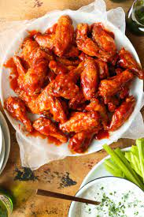

Hot Wings

Description
If you have a stomach of iron and love the taste of spicy foods, this recipe for hot wings are for you!
The two components for making amazing Hot Wings are the chicken wing and the hot sauce. Most restaurants nail
one of these components but not the other. The best cooked wing combined with mediocre sauce ruins the entire experience.
However, this recipe provides the definitive Hot Wing experience.
Ingredients
- Canola Oil - For Frying
- 24 Chicken Wings
- One 12-ounce bottle cayenne hot pepper sauce
- 1 Stick of Butter
- Several dashes of Worcestershire sauce
- Several dashes of Hot Sauce
Recipe
-
Preheat the oven to 325 degrees F. Heat 3 inches of canola oil in a heavy pot to 375 degrees F.
-
Add half the chicken wing parts to the oil and fry them until they're golden brown
and fully cooked, 5 to 7 minutes. Remove and drain on paper towels. Repeat with the other
half of the wing parts. In a saucepan, heat the cayenne sauce and butter over medium-low heat.
Add the Worcestershire and hot sauce. Let it bubble up, and then turn off the heat. Place the
wings in an ovenproof dish and pour the hot sauce over the top. Toss to coat, and then bake in
the oven for 15 minutes.
-
Serve with blue cheese dip, celery sticks... and your favorite cold, fizzy beverage.
Recipe Reference
Return to Home